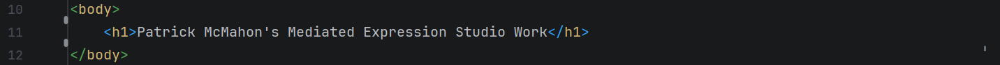
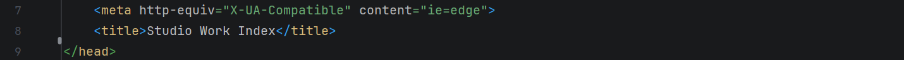
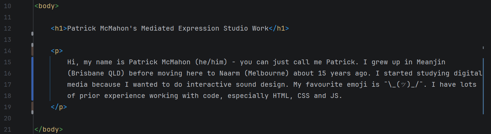
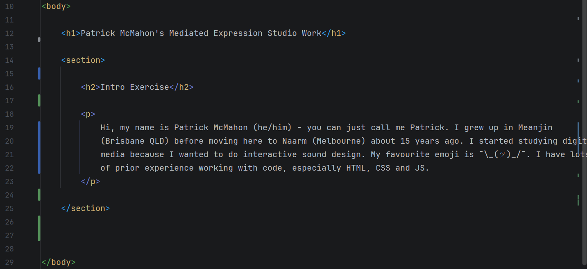
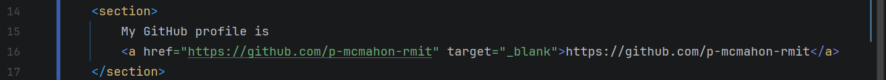
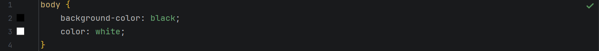
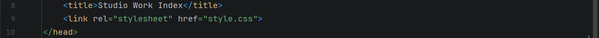
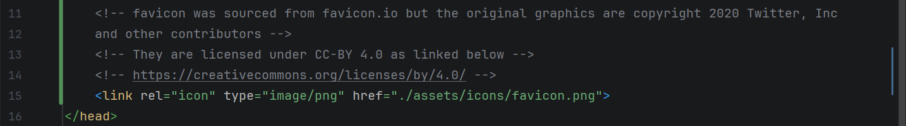

This is the intro exercise instructions from week 1 class 1. It assumes you've set up your GitHub repository, created the index.html file and run the "!" emmet template as explained here.
-
Inside of your body element on a new line write a new h1 element. h1 stands for heading 1, usually used to
give a title to a page. Inside of the tags write your web page's title like in the example below.

Make sure to load your page in the browser to check your work as you go. -
Now we want to change the title of the page in the browser tab, so we can change out the content of the
title element inside of the head element. It should be "Document" by default, so let's pick something
more appropriate like the example below.

Make sure to load your page in the browser to check your work as you go. -
Next we want to write in some answers to the following introduction questions:
- What is your full name, preferred name and pronouns?
- Where are you from?
- What brought you to the Digital Media program?
- What is your favourite emoji?
- What expressive software are you most comfortable using?
- What do you usually create with it?
- What is your experience with coding?

Make sure to load your page in the browser to check your work as you go. -
As we want to keep adding to this page throughout semester we need to implement some information design.
Let's put our paragraph inside of a section element, and then give it a section title using the h2
(heading 2) element like in the example below.

Make sure to load your page in the browser to check your work as you go. -
As one of the assignment requirements is to link to your GitHub profile let's also add that in now. To
create a link we use the a (anchor) element. Like our p element we need to put some text inside, which is
what the link will look like - in this case we want to just put the URL. This doesn't create a link by
itself though, we also need to include the href attribute inside the a tag and then put our URL there as
seen in the example below.

We can also add the target attribute with the value of "_blank" to ask the browser to open the link in a new tab.
Make sure to load your page in the browser to check your work as you go. -
Let's add a small amount of styling to our page - create a new file called exactly style.css in the same
folder as our index.html, and then write the following inside it to change the background and text colours.

This won't be applied to our page just yet, as it doesn't know to load the file. Jump back into index.html and add a link inside the head element as seen in the example below.
Make sure to load your page in the browser to check your work as you go. -
Finally let's add in a favicon image to the browser tab. We can create our own image or grab one from
https://favicon.io/. Once we have our image (I usually
use the one labelled favicon-32x32.png from the downloaded zip file we need to add it to our website folder.
While we could just add it in the same folder as our index.html and style.css files, let's practice good
information design and create a new folder called assets to hold all our media, then within assets a new
folder called icons, where we can place our image file (for simplicity's sake I've renamed it favicon.png).
Like our style.css we need to tell our web page to load the file by linking it in the head element as seen
in the example below.

Note that as I didn't create the asset myself I've included a code comment attributing them.
Make sure to load your page in the browser to check your work as you go. - That's it - we should now have a basic studio work index running locally on our machine. The next step will be to publish it so that it can be viewed on any device running a web browser. Jump back to step 9 in the Setup Guide for more details.